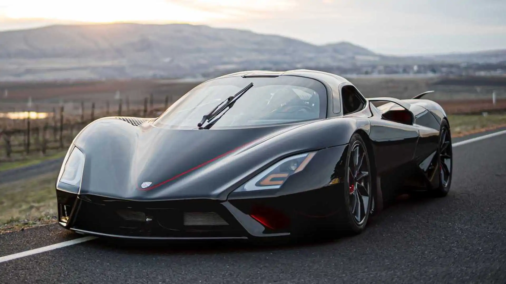
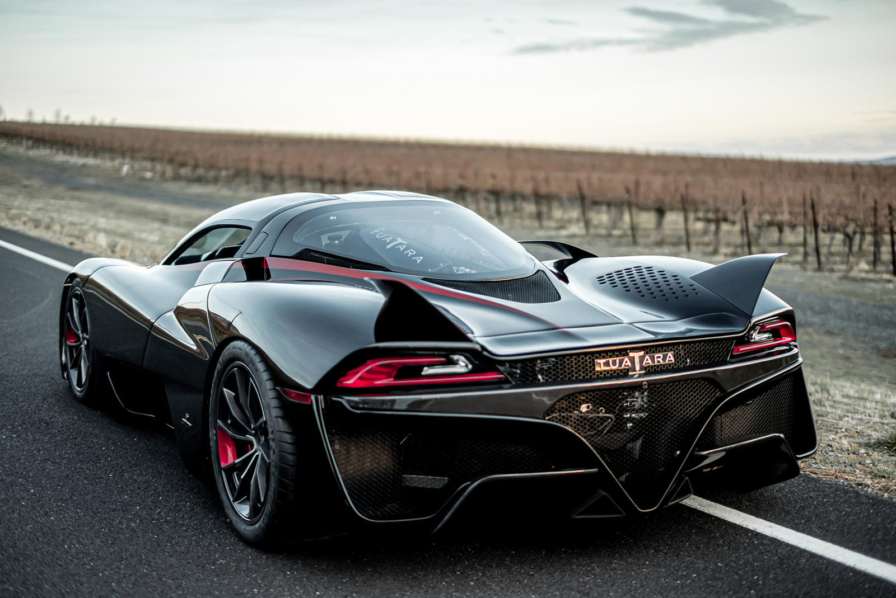
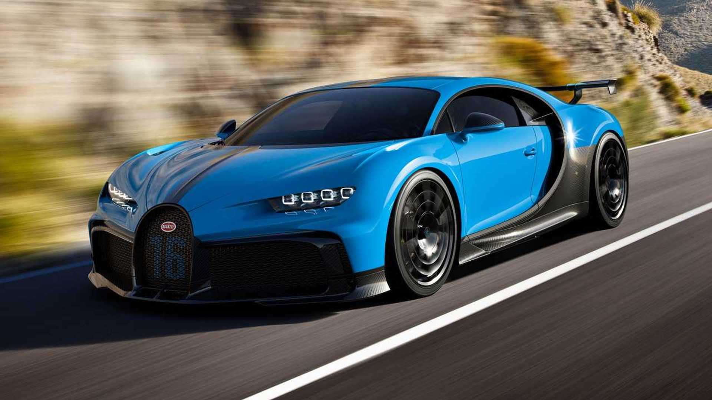
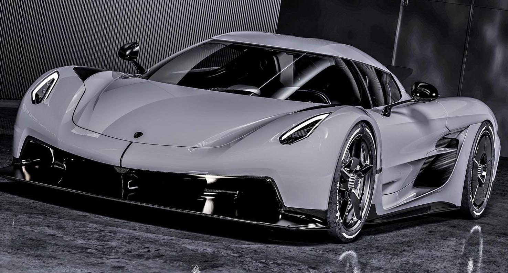
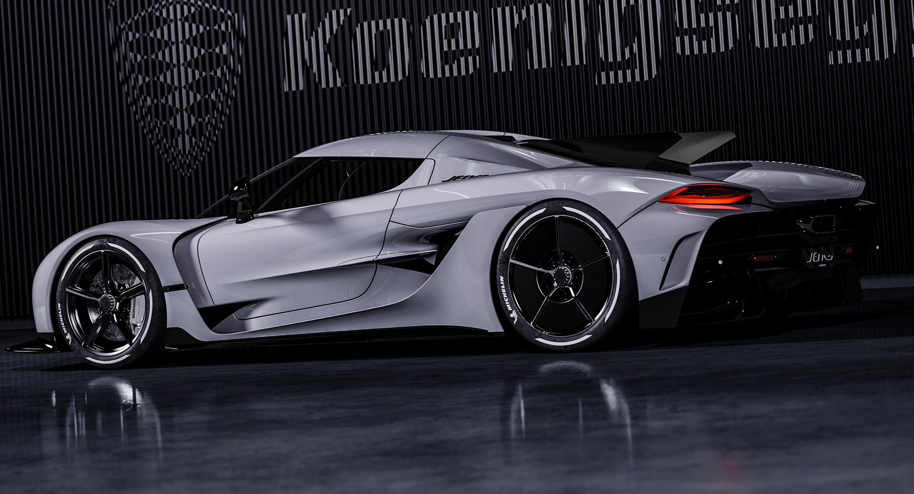

3 самых быстрых машин в мире!
1. SSC Tuatara

SSC Tuatara — гиперкар американской компании Shelby Super Cars. Прототип официально был представлен в 2011 году в Китае в городе Шанхае совместно с открытием там официального дилера SSC Asia. Tuatara является вторым гиперкаром компании Shelby Super Cars. Идея создания нового суперкара пришла компании SSC после установления 4 июля 2010 года нового мирового рекорда скорости другим суперкаром — Bugatti Veyron Super Sport. До этого момента компания уже обладала мировым рекордом скорости, установленным суперкаром SSC Ultimate Aero TT.

SSC Tuatara оснащается двигателем V8 с двойным турбонаддувом мощностью 1350 л. с. (при 6800 об/мин) при работе на обычном бензине и 1774 л. с. на гоночном топливе Е85. Масса двигателя составит 194 кг. Он агрегатируется 7-ступенчатой механической коробкой передач H-Pattern, либо 7-ступенчатой секвентальной роботизированной коробкой передач SMG, оборудованной тройным диском сцепления. Максимальная скорость автомобиля по словам компании составит 443 км/ч (теоретическая)[9] Разгон с 0 до 100 км/ч будет осуществляться за 2,5 с.
2. Bugatti Chiron

Bugatti Chiron — гиперкар компании Bugatti (входит в совместное предприятие Bugatti Rimac), официально представлен публике в 2016 году. Модель получила название в честь автогонщика Луи-Александра Широна, который выступал за марку с 1928 по 1958 год. В Евросоюзе цены на модель в 2016 году начинались от €2,5 миллиона. Базовая цена гиперкара достигает £1,9 миллиона, а средняя стоимость опций составляет £250 тысяч. Первые клиенты получили автомобиль осенью того же года. Всего было продано 500 автомобилей. Производство завершилось в 2022 году.

Двигателем Bugatti Chiron является огромный турбированный бензиновый W16 объемом 7993 кубических сантиметра. У него четыре турбокомпрессора, по две форсунки и четыре клапана на цилиндр, карбоновый впускной коллектор и титановая система выхлопа с четырьмя катализаторами. Инновационные технологии и большой объем позволили инженерам выжать 1500 лошадиных сил при 6700 об/мин и 1600 Нм крутящего момента в диапазоне от 2000 до 6000 оборотах коленчатого вала в минуту. Благодаря потрясающим мощностным характеристикам и передовой трансмиссии, гиперкар способен срываться с места до скорости в сто километров час всего за 2,4 секунды, до 200 за 6,5 секунды, а до 300 уже за 13,6. Скоростной потолок, в свою очередь, составляет 420 километров в час, но чтобы достичь ее придется активировать специальный режим с помощью второго ключа.
3. Koenigsegg Jesko Absolut

Если «обычный» Jesko, представленный год назад на автосалоне в Женеве, ориентирован, в первую очередь, на уверенную езду по извилистым трекам, то Jesko Absolut – король прямой дороги. Заднюю часть кузова растянули на 85 мм. В результате прижимная сила уменьшилась с 1400 до 150 кг. Также скоростной версии перенастроили подвеску. Оба варианта «Йеско» оснащены фирменным пятилитровым V8 с самым легким в мире коленвалом. На бензине мотор генерирует 1299 л.с., а на биотопливе E85 – 1625 л.с., то есть заметно больше 1 мегаватта (отсюда и термин «мегакар»).

Двигатель агрегатирован с девятиступенчатым роботом собственной разработки Koenigsegg, который очень быстро переключает передачи, выбирая именно ту, что обеспечит максимальное ускорение – эта функция называется Ultimate Power On Demand.Koenigsegg прямо не называет максимальную скорость Jesko Absolut, но утверждает, что новинка готова сбить корону с головы любого чемпиона – как только представится такая возможность, «в зависимости от условий и места предполагаемого заезда». Ранее сообщалось, специально подготовленный «Йеско» сможет преодолеть скоростной (и психологический) барьер в 500 км/ч, опередив Bugatti Chiron Super Sport 300+.